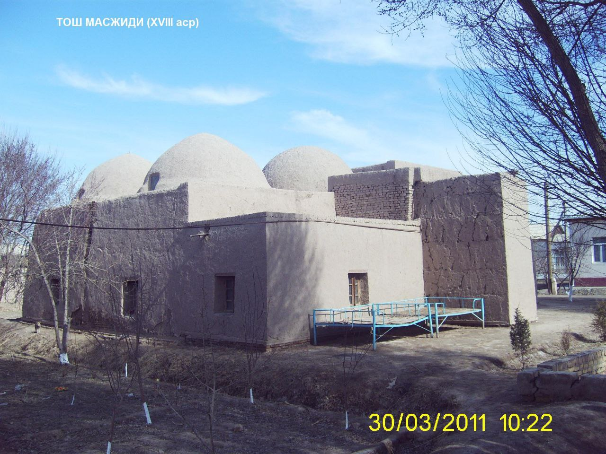
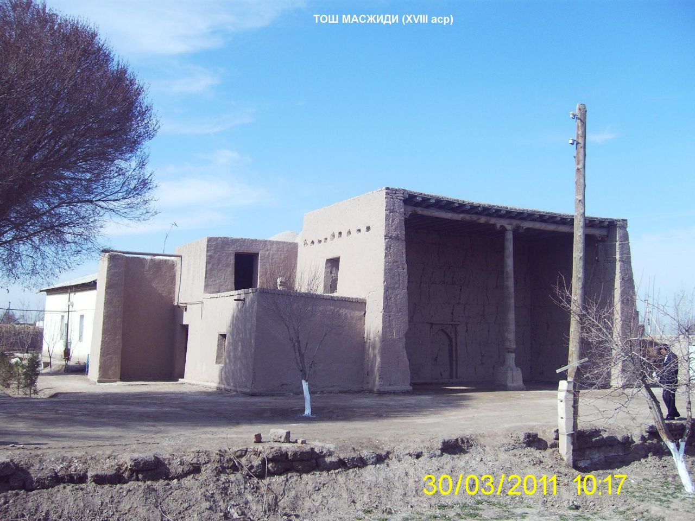

"TOSH MACHIT"
1. Me’moriy inshootning nomi:
"TOSH MACHIT"
2. Me’moriy inshoot tiklangan yil:
XVIII asr oxirida qurilgan
3. Me’moriy inshoot joylashgan manzil:
Xiva tumani Soyot qishlog‘ida joylashgan.
4. Me’moriy inshootning qurilish materiallari:
Xom g‘isht, paxsa - guvala, qum, alebastr-ganch, yog‘och
5. Inshootning bosh fasadi h.k.lar:


6. Me’moriy inshootning o‘lchamlari
Ёдгорликнинг ўлчами – 12,0 х 10,0 м; Ёзги масжид айвонининг баландлиги – 3,80 м; Хоналарнинг сони - 4 та
7. Me’moriy inshoot to‘g‘risida tarixiy ma’lumot:
Tosh Machit qishloq masjididir. Bino XIV asrdan qolgan noma’lum yodgorlik o‘rnida Mulla Vafo eshon degan bir mahalliy usta tomonidan qurilgan. Hozirgi ko‘rinishda qurilgan Tosh Machit XVIII asr oxirida mahalla masjidi sifatida tiklangan. Bino o‘sha davrdagi qurilish-me’morchiligi an’analarida barpo qilingan. Tosh Machitning yer ostini shurf qazib o‘rgangan arxeologlar - masjidning o‘rnida u qurilgunga qadar ham aholining ommaviy tadbirlar o‘tkazadigan joyi bo‘lgan ekanligini aniqlashdi. Haqiqatan ham hozirda ham Tosh Machitda ommaviy udumlar va tadbirlar o‘tkazilib kelinmoqda. Bino davr o‘tishi bilan turli maqsadlarda foydalanish uchun qayta jihozlangan va ta’mirlangan.
1997 yili Xivaning 2500 yilligi yubileyi munosabati bilan bino ilmiy asosda ishlangan loyiha asosida tubdan mukammal ta’mirlanib, asl holiga keltirildi. Binodan oqilona foydalanish maqsadini ko‘zlagan holda uni mahalla fuqarolar faollarini iltimosi va tashabbussini e’tiborga olib, Soyot mahallasiga saqlash asosida berildi.
8. Me’moriy inshootning texnik holati:
20% devor konstruksiyalari ekologik va texnogen ta’sirlar natijasida yo‘qolib ketgan, texnik holati yaxshi.
BOSH SAHIFAGA QAYTISH